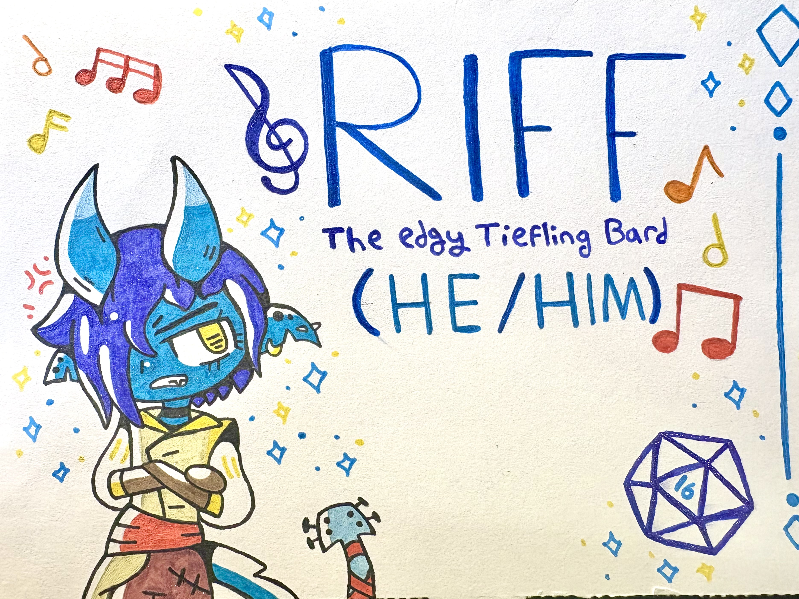

Tales of Resilience (Pre-Approved)
For my second-ever honors experience, I partook in the amazing experience that is Tales of Resilience. Tales of Resilience is a Dungeons & Dragons campaign hosted by the honors program, meant to build on our reflective and storytelling skills. Overall, I found it to be a great experience, and I learned a lot from participating in the campaign.
One of the biggest lessons I learned by far is the importance of finding joy in even the most dire of situations. Although Zardigash in the campaign didn't turn out as great as it seemed on the surface, my team and I were able to find time to throw parties, make light of the different difficult moments we faced, and learn to take failure in stride. Additionally, I was also able to deduct from this experience that it's acceptable sometimes to simply take a day off. As an incredibly busy college student, I often don't find time to do this often enough.
Although Tales of Resilience is meant to be a way to explore more difficult topics and some of the pressures people face living in our current society, I think it's equally as much of a reminder to find the bits of joy that you can in the difficult moments. One simple smile can make even the most daunting of tasks feel slightly more manageable.
The sample I chose for this experience was the nameplate I used to represent my character, because I think having a visual representation of the character I created was vital for the experience. I found it difficult to visualize everything that was happening throughout the campaign, so I appreciated visual aids whenever they were given, and tried my best to make my own for others as well, since it's what I would want.